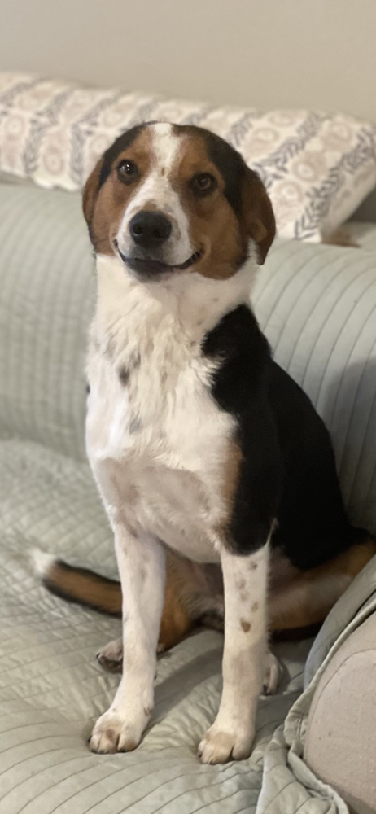

Peter Michael Fiore is a classical organist and composer. He has performed many recitals at various venues, including the LaGrua Center in Stonington, CT, The Ocean House in Watch Hill, RI, Oberlin College in Oberlin, OH at both Finney Chapel and Warner Concert Hall; The University of Rhode Island Fine Arts Center in Kingston, RI, and the George Kent Performance Hall in Westerly, RI. In 2019, he was awarded the Outstanding Accompanist Award at the Music in the Parks Festival in Jackson Township, NJ. He also won the Kalliope Reed Quintet University of Rhode Island Student Composers Competition in 2022, and most recently was awarded one of the Lois Conboy Memorial Awards hosted by the Rhode Island Chapter of the American Guild of Organists in June 2023. Peter has recently completed a work for Orchestra titled "Sunrise on the Ocean" which debuted at the University of Rhode Island Student Composer's Concert on April 30, 2023. Peter ‘s piano and organ instructors include Dr. Michael Campbell and Dr. Manabu Takasawa for piano, and Joseph Ripka, Dr. Matthew Provost, and George Kent for organ. Peter is currently the Director of Music at Divine Mercy Catholic Parish in Montville, CT, where he leads the parish choirs and coordinates the music at the parish's 3 churches- St. John the Evangelist Church in Uncasville, CT; Our Lady of Perpetual Help Church in Quaker Hill, CT; and Our Lady of the Lakes Church in Oakdale, CT. Previous leadership roles include Assistant organist and choir director at Trinity Lutheran Church in Ashaway, RI; Director of Music and organist at the Pequot Chapel in New London, CT; resident organist at St. Mary Catholic Church in Stonington, CT; and organist Director of Music at the University of Rhode Island Catholic Center; and Director of Music at St. Francis of Assisi Catholic Church in Wakefield, RI. He has also worked as a substitute organist at several churches in Rhode Island and Connecticut.
